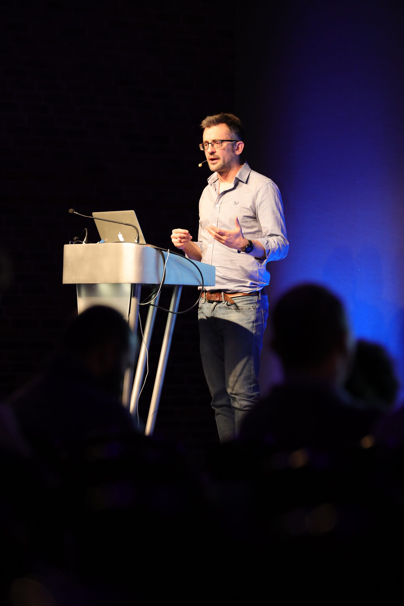

Your Database Is a Gold Mine. Let AI Dig Safely.
Let anyone in the business ask questions of your database in plain English, using an MCP server with read only access that hides PII.
As a seasoned conference speaker, I've shared my insights on AI-assisted coding, code quality, testing and static analysis at events around the world. I aim for my talks to be informative and engaging, leaving audiences with practical takeaways they can apply immediately to their work.
Organising an event? See my speaker profile See my speaking diary

Talks I'm giving now.
Let anyone in the business ask questions of your database in plain English, using an MCP server with read only access that hides PII.
AI coding agents haven't made Rector redundant. Ask an agent to write a Rector rule and the change is made the same way everywhere, every time.
AI assisted coding needs deterministic guardrails. Turn every issue you find in generated code into a check the agent has to fix.
PHPStan increases code quality and reduces bugs. Learn how custom rules amplify these benefits.
Many PHP developers would love generics. We might have to wait a while until they come along. This article shows how existing tools can give us the power of generics now (almost).
This talks through how to do upgrade legacy codebases.
It's good practice to write decoupled code. That good practice should include minimising the coupling between your test code and the code under test. This talk examines why this is important and how to achieve it.
What I learnt from my first three months of AI assisted coding with Claude, covering a plan-first workflow, layers of safety nets and the prompts that proved most useful.
Talks I've given in the past, with the year I last gave them.